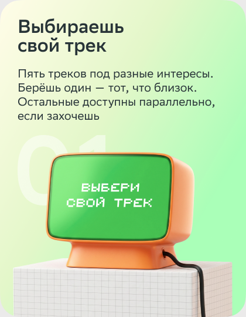
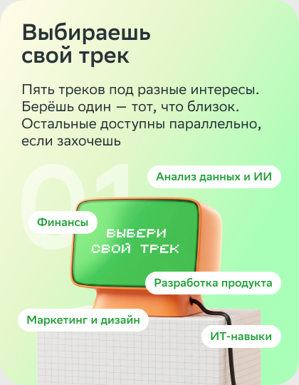
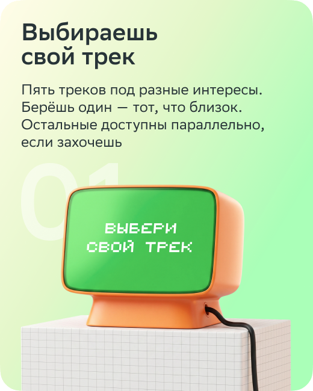
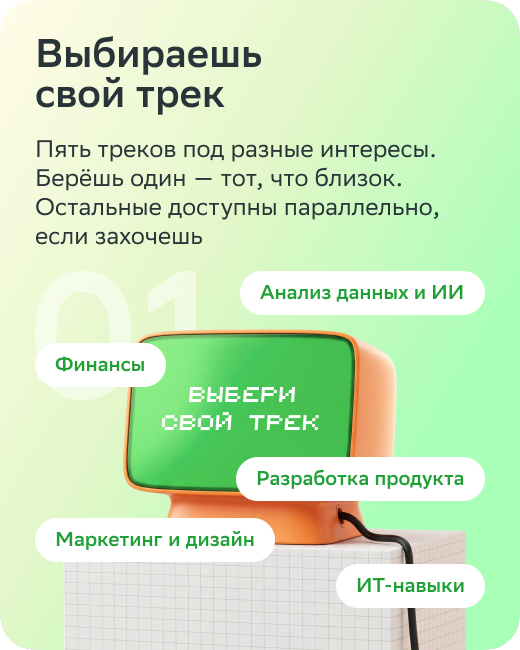
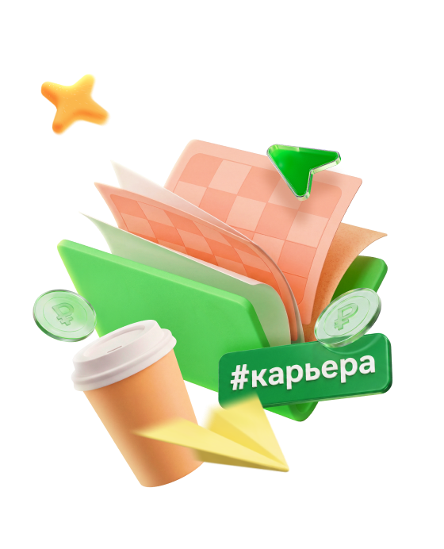
Совместная образовательная программа
от Сбера и СберУниверситета




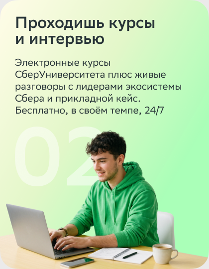
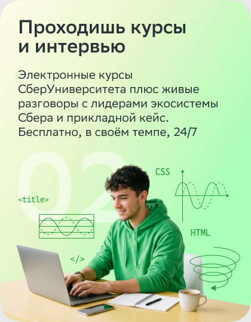
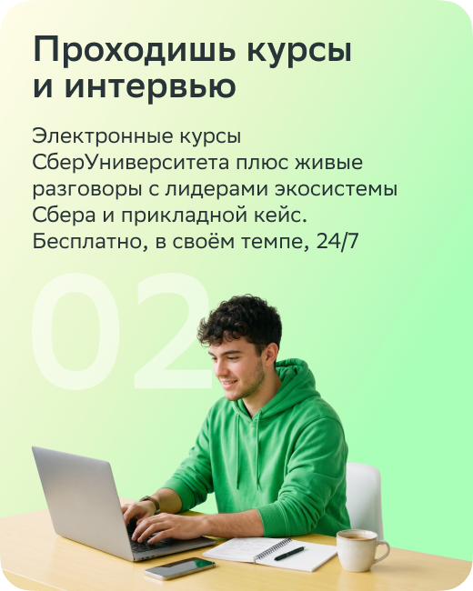
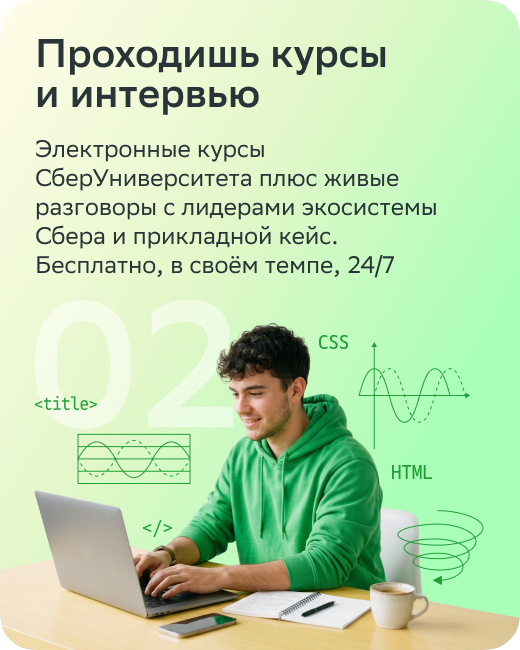
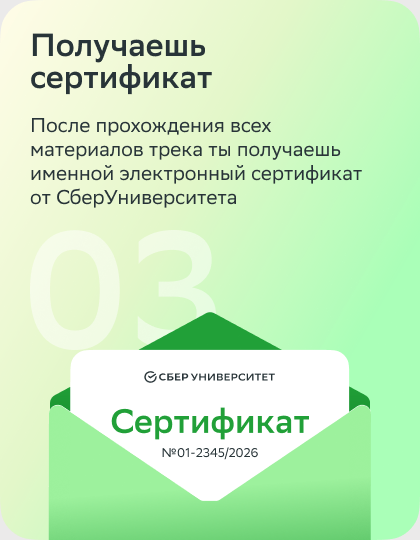
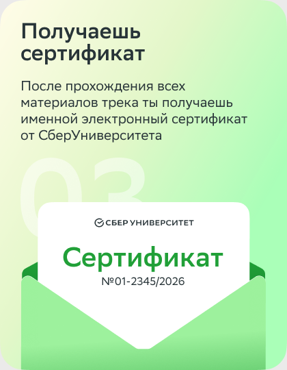
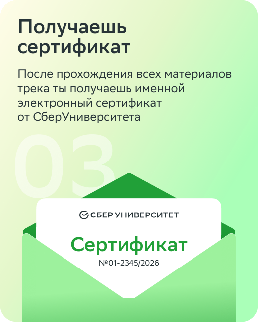
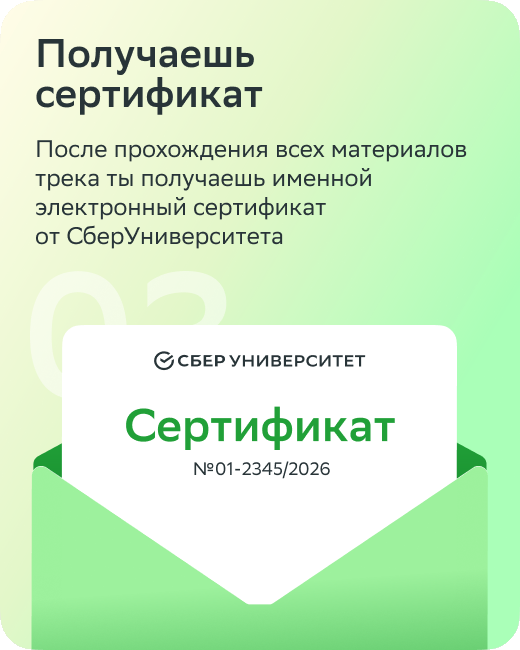
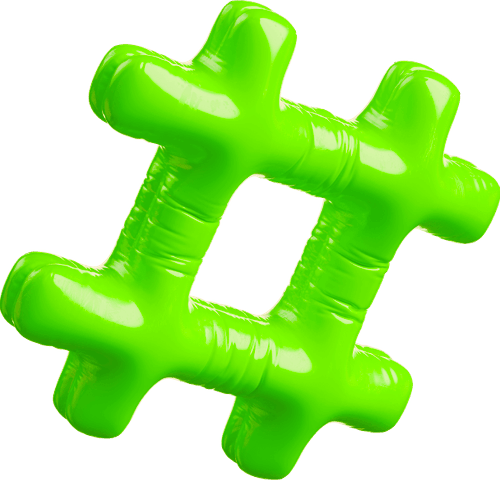
ИИ — не хайп, а твой будущий соавтор. Введение в большие данные, рекомендательные системы, ИИ-агенты и профессии будущего
Почему один дизайн продаёт, а другой остаётся незамеченным. CJM, нейромаркетинг, UX и презентации
ПодробнееКак работают деньги в цифровую эпоху. Личные финансы, unit-экономика, банковские продукты и разбор реальных финансовых задач
ПодробнееPython и алгоритмы, большие данные, генеративный ИИ и технические тексты. Фундамент для будущего инженера
ПодробнееПолный цикл создания цифрового сервиса: гипотезы, UX-тестирование, банковские карты, эквайринг и основы DevOps
Подробнее
Программа состоит из двух частей. Общая база даёт контекст и мягкие навыки,
а трек, который ты выбираешь сам — специализацию
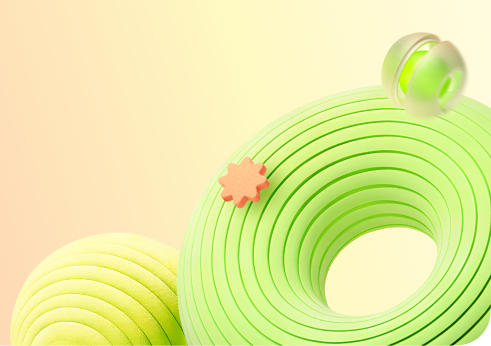
Два общих модуля проходят все участники программы. Это контекст, на котором строится любой профессиональный трек
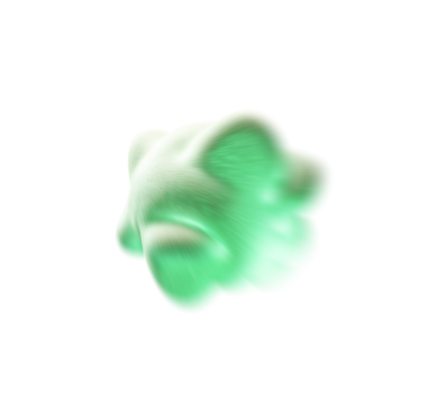
Углубление в выбранную тему: пять направлений со своим набором курсов, интервью и прикладных кейсов. Выбираешь одно — идёшь по нему до сертификата
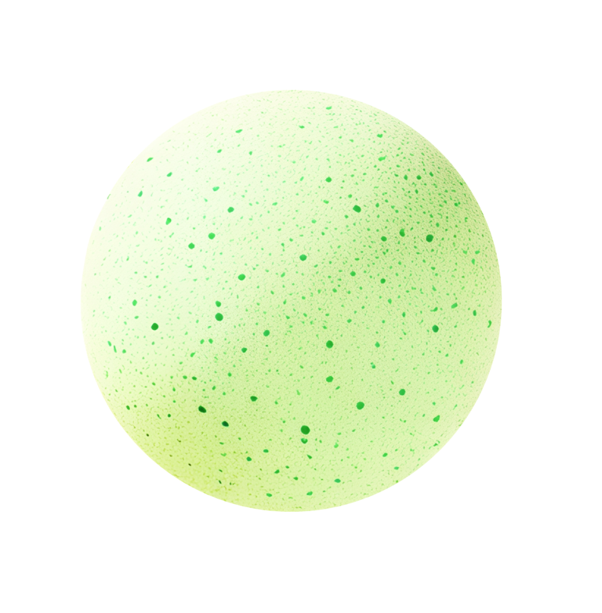
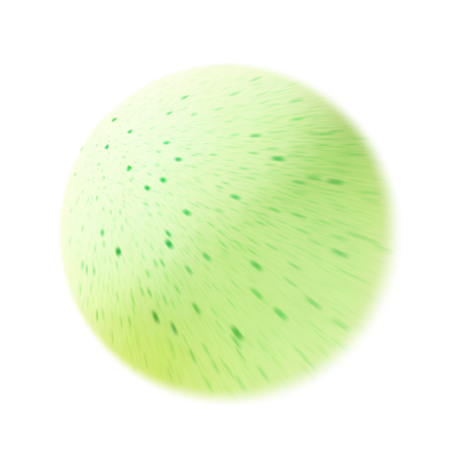
Нет. Программа не связана с трудоустройством и не даёт приоритет на стажировку. Её задача — расширить кругозор, дать прикладные навыки и показать, как устроена крупная цифровая компания изнутри.
Программа полностью бесплатная. Регистрируешься, выбираешь трек и проходишь все материалы без какой-либо оплаты.
Студенты и молодые специалисты, которым интересно разобраться в работе крупной цифровой компании. Нет ограничений по специальности или курсу.
От 40 до 68 часов — в зависимости от выбранного трека. Ты проходишь в своём темпе, доступ открыт 24/7.
Полностью онлайн — на платформе СберУниверситета. Видеолекции, интерактивные курсы и интервью с экспертами доступны из любой точки.
Да. После завершения одного трека можно записаться на следующий. Каждый трек — отдельный сертификат.
Твоё имя, название трека и дата завершения. Сертификат именной, выдаётся от СберУниверситета в электронном формате.
Регистрация на платформе СберУниверситета занимает пару минут. Доступ к курсам — сразу после подтверждения почты
Выбрать трек